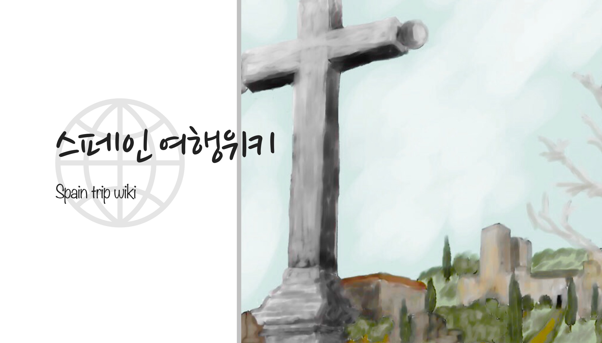
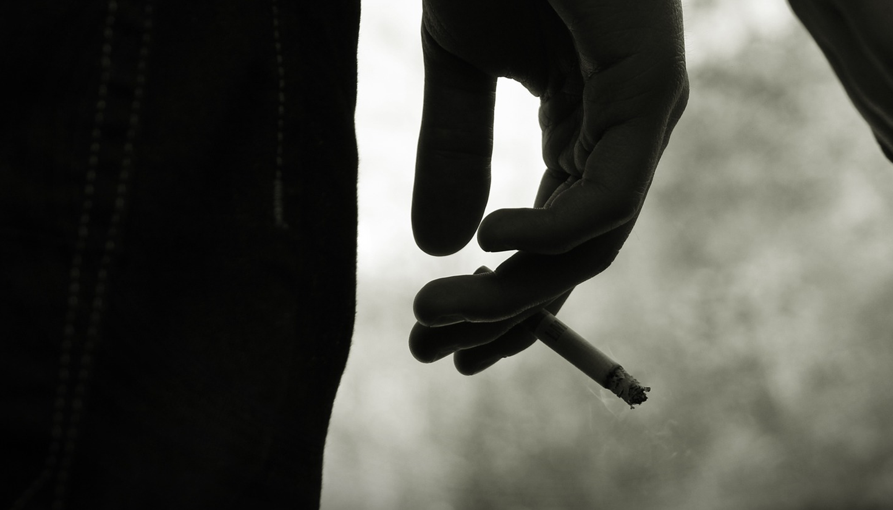
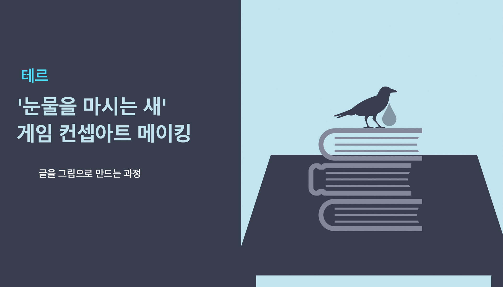
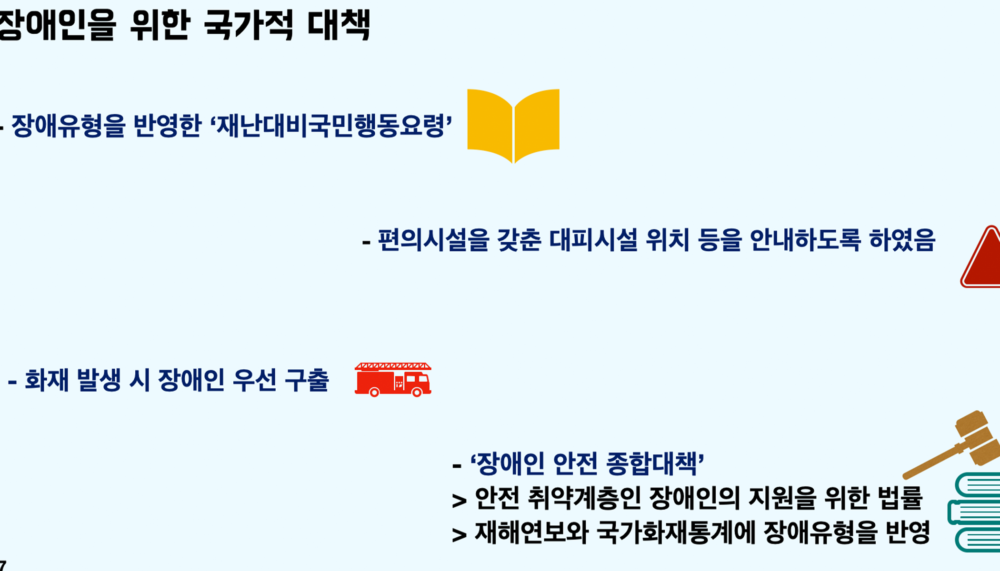
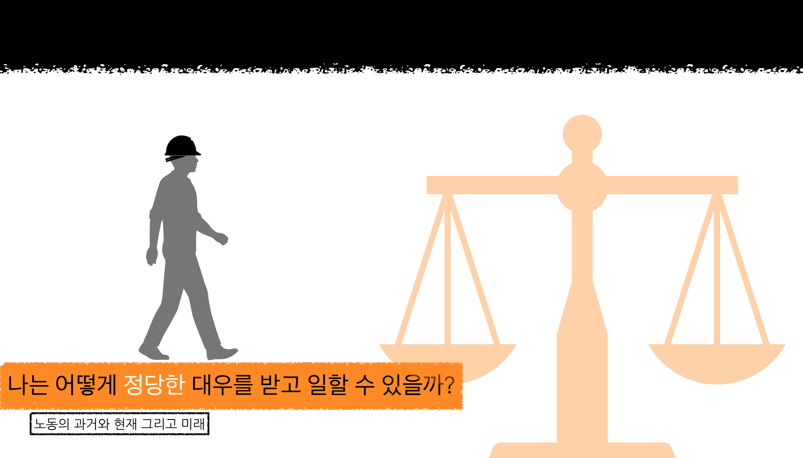
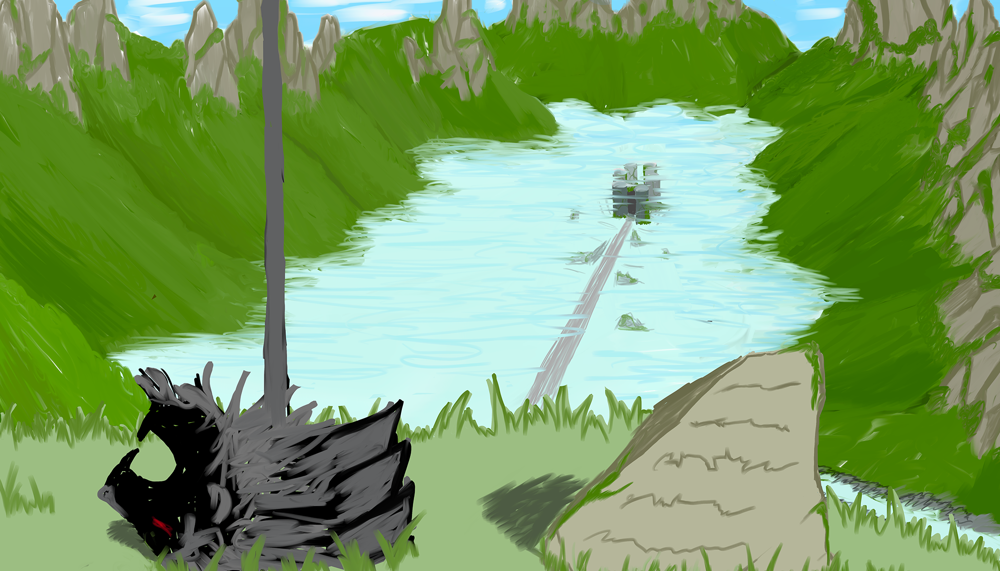
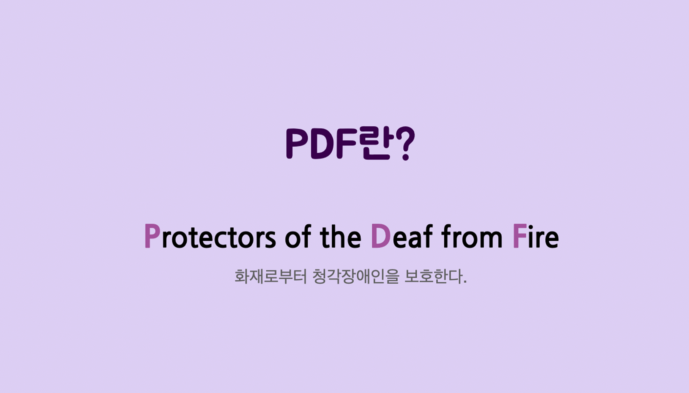
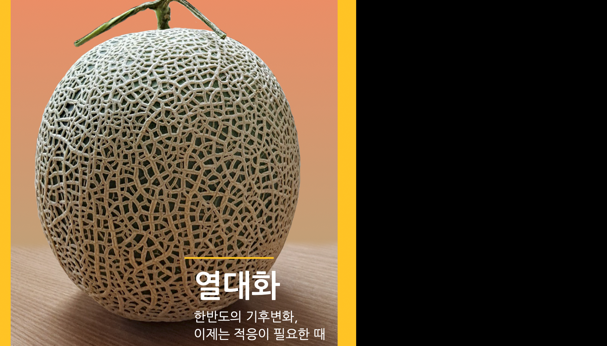
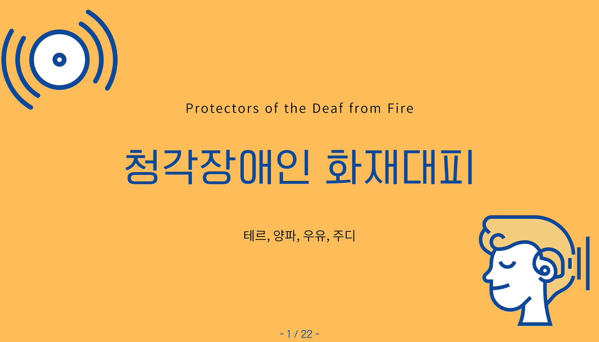
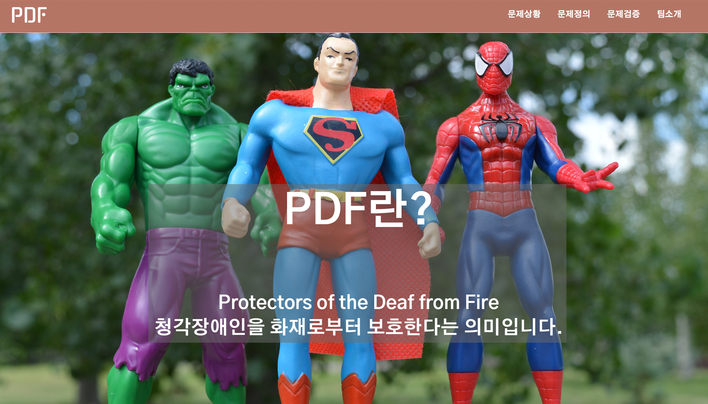

M1
M2
M3
M4
개인 프로젝트-스페인 여행위키

팀 문제정의 프로젝트-길거리 흡연 문제를 해결

첫번쨰 팀 프로젝트는 길거리 흡연 문제의 해결입니다. 길거리
흡인이 많은 이유를 흡연자 입장에서 분석해보았으며,
흡연자들을 위한 흡연부스를 구상하였습니다.
흡인이 많은 이유를 흡연자 입장에서 분석해보았으며,
흡연자들을 위한 흡연부스를 구상하였습니다.
수업-바이러스에서 살아남는 방법

첫번째로 받은 수업은 바이러스를 주제로 한
교과수업이었습니다. 바이러스를 통계를 통해 분석하고,
바이러스가 가져오는 사회적 영향을 알아보았으며, 바이러스가
감염되는 과정을 학습하였습니다.
교과수업이었습니다. 바이러스를 통계를 통해 분석하고,
바이러스가 가져오는 사회적 영향을 알아보았으며, 바이러스가
감염되는 과정을 학습하였습니다.
개인 프로젝트-소설 컨셉아트 제작기

두번째 개인 프로젝트는 게임의 컨셉아트를 제작하는 것입니다.
게임 컨셉아트의 소재로 소설을 선택하였고,
신화나 역사 속 건축양식을 통해 초안을 그렸습니다.
소재를 구하는 것에 꽂혀 컨셉 아트 자체에 대한 내용이 부실했습니다.
게임 컨셉아트의 소재로 소설을 선택하였고,
신화나 역사 속 건축양식을 통해 초안을 그렸습니다.
소재를 구하는 것에 꽂혀 컨셉 아트 자체에 대한 내용이 부실했습니다.
팀 문제정의 프로젝트-장애인 화재대피 문제를 해결

두번쨰 팀 프로젝트는 장애인 화재대피입니다.
높은 장애인 화재 사망률 문제를 해결하기 위해 관련 학습을 진행하였습니다.
해결 대상인 장애인의 범위가 자주 바뀌었습니다.
신체장애인,지체장애인,시각장애인 등을 거쳤습니다.
높은 장애인 화재 사망률 문제를 해결하기 위해 관련 학습을 진행하였습니다.
해결 대상인 장애인의 범위가 자주 바뀌었습니다.
신체장애인,지체장애인,시각장애인 등을 거쳤습니다.
수업-나는 미래에서 정당한 대우를 받을 수 있을까?

두번째 수업은 노동을 주제로 하였습니다.
정규직과 비정규직에 대해 학습하고,
노동과 관련된 문학작품을 읽고 분석하였으며
노동에서 나타나는 차별을 생물학 분야를 통해 학습하였습니다.
정규직과 비정규직에 대해 학습하고,
노동과 관련된 문학작품을 읽고 분석하였으며
노동에서 나타나는 차별을 생물학 분야를 통해 학습하였습니다.
개인 프로젝트-컨셉 아티스트가 되기 위해

세번쨰 개인 프로젝트는 두번째에 이어가는 컨셉아트입니다.
앞 프로젝트의 부족한 부분을 메꾸기 위해
게임 컨셉아트가 제작되는 과정 전체를 학습하였으며,
좋은 컨셉아트를 그리는 방법에 대한 결론을 낼 수 있었습니다.
앞 프로젝트의 부족한 부분을 메꾸기 위해
게임 컨셉아트가 제작되는 과정 전체를 학습하였으며,
좋은 컨셉아트를 그리는 방법에 대한 결론을 낼 수 있었습니다.
팀 문제정의 프로젝트-청각장애인 화재대피

세번째 팀 프로젝트는 두번째에서 이어갑니다.
애매하게 끝난 해결할 대상을 청각장애인으로 과감하게 좁히고
청각장애인 화재대피에서 가장 중요한 시각경보기에 대해 학습하고
메뉴얼,법률의 학습으로 청각장애인 화재대피에서 발생하는 문제들에 대한
가설을 세웠습니다.
애매하게 끝난 해결할 대상을 청각장애인으로 과감하게 좁히고
청각장애인 화재대피에서 가장 중요한 시각경보기에 대해 학습하고
메뉴얼,법률의 학습으로 청각장애인 화재대피에서 발생하는 문제들에 대한
가설을 세웠습니다.
수업-열대화 사회에서 살아남는 방법

세번째 수업은 기후변화로 교과를 학습하였습니다.
팀은 기후변화 중에서도 열대화라는 주제를 삼았고
열대화에서 발생하는 현상들을 토대로 어떻게 해결하는지를 고민하였습니다.
국산 열대과일을 이용한 화채를 만드는 등
열대화에 대한 적응과 해결하기 위한 노력을 했으며
열대화의 원인,영향,해결,미래에 대한 내용을 담은
잡지를 제작하였습니다.
팀은 기후변화 중에서도 열대화라는 주제를 삼았고
열대화에서 발생하는 현상들을 토대로 어떻게 해결하는지를 고민하였습니다.
국산 열대과일을 이용한 화채를 만드는 등
열대화에 대한 적응과 해결하기 위한 노력을 했으며
열대화의 원인,영향,해결,미래에 대한 내용을 담은
잡지를 제작하였습니다.
팀 문제정의 프로젝트-시각경보기의 정보 부족

네번째 팀 프로젝트는 세번째에서 이어갑니다.
이전 프로젝트에서 세운 가설들을 증명하여 최종 원인을 꼽았습니다.
청각장애인 화재대피 문제에 대한 핵심원인은
청각장애인들이 시각경보기에 대한 정보를 접하지 못한다는 것 이었습니다.
이전 프로젝트에서 세운 가설들을 증명하여 최종 원인을 꼽았습니다.
청각장애인 화재대피 문제에 대한 핵심원인은
청각장애인들이 시각경보기에 대한 정보를 접하지 못한다는 것 이었습니다.
수업-웹페이지 제작을 위한 코딩 수업

네번째 수업은 프로그래밍입니다.
앞서 배운 교과 수업과는 다르게 네번째는
웹 페이지 제작을 중심으로 한 코딩 수업입니다.
html,css,js를 학습하고 개인과 팀 웹을 제작하였습니다.
앞서 배운 교과 수업과는 다르게 네번째는
웹 페이지 제작을 중심으로 한 코딩 수업입니다.
html,css,js를 학습하고 개인과 팀 웹을 제작하였습니다.
스페인에 대한 정보를 소개하는 책를 제작하였습니다.
학습한 내용이 거의 없었기 때문에 내용에서 깊이를 찾기가 힘들며,
책 자체도 상당히 지루한 내용이었습니다.